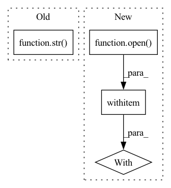

Pattern ID :41580
Before Change
for label, images in data.items():
for image_name in images:
image = image_dir_path / f"{image_name}.jpg"
features = {"image": str( image) , "label": label}
yield image_name, features
After Change
def _generate_examples(self, images, metadata_path):
Generate images and labels for splits.
with open (metadata_path, encoding="utf-8") as f:
files_to_keep = set(f.read().split("\n"))
for file_path, file_obj in images:
if file_path.startswith(_IMAGES_DIR):
if file_path[len(_IMAGES_DIR) : -len(".jpg")] in files_to_keep:In pattern: SUPERPATTERN
Frequency: 3
Non-data size: 4
Instances Fragment ID: 116900013
Project Name: huggingface/datasets
Commit Name: 0ef629cdda4aaab151a792ff29c879f4fcf7f4f4
Time: 2021-10-18
Author: 42851186+lhoestq@users.noreply.github.com
File Name: datasets/food101/food101.py
M Class Name: Food101
N Class Name: Food101
M Method Name: _generate_examples(3)
N Method Name: _generate_examples(3)
M Parent Class: datasets.GeneratorBasedBuilder
N Parent Class: datasets.GeneratorBasedBuilder
M File Name: datasets/food101/food101.py
N File Name: datasets/food101/food101.py
M Start Line: 186
M End Line: 191
N Start Line: 206
N End Line: 215
Before Change
text: Optional[bool] = False,
refresh: Optional[int] = 0,
):
return send_logs(os.path.join(settings.MONAI_LABEL_APP_DIR, "logs", str( logfile) ), lines, html, text, refresh)
@router.get("/gpu", summary="Get GPU Info (nvidia-smi)")After Change
refresh = max(refresh, 3) if refresh else 0
if lines > 0:
with open (logger_file) as fin:
response_lines = list(deque(fin, lines))
if html and not text:
response = HTML_TEMPLATE.replace("LINES_T", str(lines))
response = response.replace( Fragment ID: 116900012
Project Name: project-monai/monailabel
Commit Name: 43205ec573b89ac09b512ba88bc2c2211ba3099b
Time: 2021-11-04
Author: sachidanand.alle@gmail.com
File Name: monailabel/endpoints/logs.py
M Class Name: AnonimousClass
N Class Name: AnonimousClass
M Method Name: get_logs(5)
N Method Name: get_logs(5)
M Parent Class:
N Parent Class:
M File Name: monailabel/endpoints/logs.py
N File Name: monailabel/endpoints/logs.py
M Start Line: 92
M End Line: 98
N Start Line: 68
N End Line: 87
Before Change
)
(hparams["output_mask_path"] / folder_name).mkdir(exist_ok=True, parents=True)
cv2.imwrite(str( hparams["output_mask_path"] / folder_name / f"{file_id}.png") , mask)
if __name__ == "__main__":After Change
prob = predictions[batch_id][0].cpu().numpy().astype(np.float16)
with open (str(hparams["output_path"] / folder_name / f"{file_id}.txt")) as f:
f.write(prob)
if __name__ == "__main__": Fragment ID: 116900011
Project Name: ternaus/check_orientation
Commit Name: a75e3361032928b0a9d2215da376432ed9119128
Time: 2020-11-12
Author: iglovikov@gmail.com
File Name: check_orientation/inference.py
M Class Name: AnonimousClass
N Class Name: AnonimousClass
M Method Name: predict(4)
N Method Name: predict(4)
M Parent Class:
N Parent Class:
M File Name: check_orientation/inference.py
N File Name: check_orientation/inference.py
M Start Line: 123
M End Line: 149
N Start Line: 142
N End Line: 149